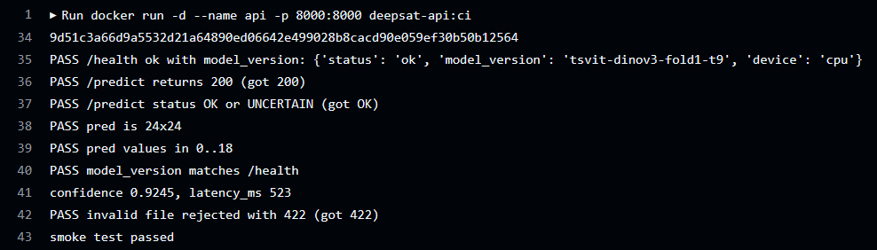
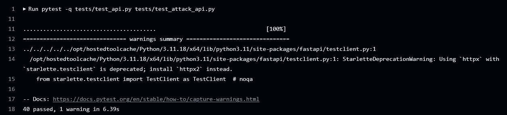

20 test case trên API suy luận TSViT_DINOv3 và Docker image: 10 test case kiểm thử (mock, AI, automation) và 10 test case tấn công, kèm kết quả trước và sau khi sửa lỗ hổng
| Sinh viên | Lưu Minh Quân |
|---|---|
| Mã sinh viên | 2351260684 |
| Lớp | 65TTNT |
| Repository | https://github.com/quanluuu/DeepSatModels (nhánh report) |
| Code được kiểm thử | commit c03ba8c, model tsvit-dinov3-fold1-t9, image quanluuu/deepsat-api |
| Ngày | 15/11/2026 |
Mọi con số trong tài liệu là số đo thật từ các lần chạy ngày 14/11/2026 và 15/11/2026. File bằng chứng nằm trong docs/report/qa/ của repository. Phụ lục ghi nguồn của từng con số.
Hệ thống là một API suy luận phân loại cây trồng từ ảnh vệ tinh Sentinel-2. Model TSViT_DINOv3 nhận một cửa sổ 24×24 pixel (240 m × 240 m) theo chuỗi thời gian. Model trả về bản đồ lớp cây trồng cho từng pixel.
| Thành phần | Mô tả |
|---|---|
GET /health | Trả status, model_version, device |
POST /predict | Nhận một file .npz gồm img (T, 10, 24, 24): 10 band Sentinel-2, reflectance thô; và doy (T,): ngày trong năm. Trả pred 24×24 (lớp 0..18), confidence, status, area_ha, model_version, latency_ms |
status | OK khi confidence ≥ 0.80; UNCERTAIN khi thấp hơn, người dùng phải xem lại bản đồ; FALLBACK khi model treo quá 10 s hoặc lỗi, pred = null |
| Model | TSViT_DINOv3: backbone DINOv3 ViT-S/16 đóng băng cho 3 band RGB của từng ngày, cộng encoder thời gian và không gian của TSViT. Test split (fold 5): OA 79.6%, mIoU 53.9% (model card) |
| Đóng gói | Docker image quanluuu/deepsat-api, chạy CPU, build và smoke test trong GitHub Actions |
client ── POST /predict (.npz) ──▶ middleware: Content-Length > 5 MB + 64 KB ? ──── có ──▶ 413
│ không
▼
read_window: zip, shape, dtype, miền giá trị, doy ? ─ sai ──▶ 422
│ đúng
▼
hàng đợi: đã có 5 suy luận chưa xong ? ───────────── có ──▶ 503 + Retry-After
│ không
▼
model TSViT_DINOv3 (1 luồng, timeout 10 s) ── treo/lỗi ──▶ 200, status FALLBACK
│
▼
200: pred 24×24, confidence, status OK / UNCERTAIN, area_ha
Bước 413, bước 503 và các luật miền giá trị trong read_window được thêm sau khi chạy test tấn công (mục 5). Trước đó, request chỉ bị kiểm kích thước file, shape, dtype và khoảng 1..366 của doy.
api/main.py, api/predictor.py), model thật và Docker image API.| Mục | Giá trị |
|---|---|
| Máy local | Windows 11, Intel Core i7-1355U, RAM 16 GB, chỉ CPU |
| Python local | 3.13.3; torch 2.11.0; numpy 2.5.2; FastAPI 0.162.0; pytest |
| CI | GitHub Actions ubuntu-latest. Job test-api dùng Python 3.11, cùng bản với image API. Job docker build image và smoke test |
| Load test | k6 v2.3.0 |
| Model | Checkpoint best.pth (GitHub Release weights-v1, kiểm SHA-256); code DINOv3 commit 6876159 |
| Dữ liệu | PASTIS24 fold 5, là test split của fold 1. 300 cửa sổ có nhãn, chia đều trên fold, lưu ở tests/fixtures/eval_windows.npz (không commit). Một cửa sổ mẫu tests/fixtures/window.npz (có commit) |
| Nhóm | Chạy ở | Lý do |
|---|---|---|
| TC-01..05, ATK-03..10 | CI, mỗi lần push và PR | Dùng StubPredictor thay model. Không cần torch, weights hay dữ liệu |
| TC-06..08, ATK-01..02 | Local | Cần weights, code DINOv3 và dữ liệu PASTIS. Chạy CPU mất 4 đến 8 phút mỗi file |
| TC-09 | CI, job docker | Máy local không cài Docker |
| TC-10 | Local: uvicorn và k6 | Đo tải với model thật trên CPU |
# cửa sổ dữ liệu cho TC-06..08 và ATK-01..02 (cần pastis24.zip ở thư mục gốc) .venv/Scripts/python -I scripts/make_fixture.py --zip pastis24.zip --eval 300 --out tests/fixtures/eval_windows.npz # model: weights/best.pth và code DINOv3 tại weights/dinov3 (giống bước build image trong CI) git init -q weights/dinov3 git -C weights/dinov3 fetch -q --depth 1 https://github.com/facebookresearch/dinov3.git 6876159a11b4df116f30f667f8c9888617df0751 git -C weights/dinov3 checkout -q FETCH_HEAD
Thiếu weights hoặc dữ liệu thì TC-06..08 và ATK-01..02 tự skip, kèm lý do. Các test còn lại vẫn chạy.
| Loại \ Tầng | API | System |
|---|---|---|
| Mock | TC-01..05: thay model bằng StubPredictor. Kiểm logic API: ngưỡng, timeout, lỗi model, validate input | — |
| AI | TC-06..08: model thật qua API (TestClient). Kiểm độ chính xác, tính tất định, độ ổn định với nhiễu | — |
| Automation | TC-01..05 chạy tự động trên CI ở mỗi push | TC-09: image Docker thật trong CI. TC-10: k6 bắn tải vào API thật |
| Test | Ngưỡng | Cơ sở |
|---|---|---|
| TC-06 | OA ≥ 74.6% và mIoU ≥ 48.9% | Model card (OA 79.6%, mIoU 53.9%) trừ 5 điểm. Dùng 300 cửa sổ: với 50 cửa sổ, khoảng tin cậy bootstrap 95% của OA là 65.0..78.4%, quá rộng |
| TC-08 | Trung bình ≥ 95% pixel giữ lớp khi nhân reflectance với hệ số ngẫu nhiên 0.99..1.01 | Thay đổi reflectance 1% không nên làm đổi lớp cây trồng của một pixel. Giá trị no-data −10000 giữ nguyên |
| TC-10 | p95 < 5 s, tỉ lệ lỗi < 1%, checks > 99% | Một cửa sổ trên CPU, 5 người dùng đồng thời |
| ATK-01, 02 | An toàn nếu accuracy giảm ≤ 10 điểm, hoặc ≥ 80% cửa sổ bị đánh dấu UNCERTAIN | Tấn công L∞ với ε = 0.03 × độ lệch chuẩn của mỗi band |
| ATK-05 | Bộ nhớ cấp phát đỉnh < 50 MB khi nhận file bomb | Đo bằng tracemalloc |
| ATK-09 | /health trả lời < 1 s khi bị flood; request thừa nhận 503 | Service phải còn sống khi quá tải |
junit-attack-before.xml.read_window, create_app). Không thêm thư viện.junit-attack-after.xml.Kết quả đo trên code cuối cùng, sau khi đã sửa lỗ hổng ở mục 5. Số đo của TC-10 trước khi sửa và so sánh trước/sau nằm ở mục 6.
| ID | Kiểm tra gì | Loại | Tầng | Chạy ở | Kết quả kỳ vọng | Kết quả thật | |
|---|---|---|---|---|---|---|---|
| TC-01 | /health báo phiên bản model | Mock | API | CI | 200, đúng 3 trường status, model_version, device | 200, đúng 3 trường | PASS |
| TC-02 | Biên ngưỡng confidence 0.80 | Mock | API | CI | 0.80 cho OK; 0.79 cho UNCERTAIN | Đúng 4/4 giá trị biên; ngưỡng đổi được qua cấu hình | PASS |
| TC-03 | Model treo quá timeout | Mock | API | CI | FALLBACK, pred = null, service vẫn trả lời | FALLBACK; request đang chờ sau đó không chạy model (1 lần gọi) | PASS |
| TC-04 | Model ném exception | Mock | API | CI | FALLBACK, không trả 500 | 200, FALLBACK | PASS |
| TC-05 | Input sai bị chặn trước model | Mock | API | CI | 422, model không được gọi | 11/11 file sai cho 422, 0 lần gọi model | PASS |
| TC-06 | Độ chính xác trên dữ liệu thật | AI | API + model thật | Local | OA ≥ 74.6%, mIoU ≥ 48.9% | OA 79.4%, mIoU 51.6% (300 cửa sổ) | PASS |
| TC-07 | Tất định | AI | API + model thật | Local | 2 lần gửi cùng input cho cùng pred và confidence | 0 pixel khác nhau; confidence 0.9245 cả hai lần | PASS |
| TC-08 | Metamorphic: nhiễu ±1% | AI | API + model thật | Local | Trung bình ≥ 95% pixel giữ lớp | Trung bình 97.9%, thấp nhất 84.2% (10 cửa sổ) | PASS |
| TC-09 | Container end-to-end | Automation | System | CI | /health ok; /predict 200, pred 24×24, lớp 0..18; file sai cho 422 | 7/7 kiểm tra PASS; latency 523 ms | PASS |
| TC-10 | Tải: k6 5 VU × 2 phút | Automation | System | Local | p95 < 5 s, lỗi < 1% | 170 request; p95 3.83 s; lỗi 0% | PASS |
CI ngày 15/11/2026: bước "API contract and attack tests (TC-01..05, ATK-03..10)" cho 40 passed, gồm 23 test của TC-01..05 và 17 test của ATK-03..10 (ảnh ở mục 5.1).
Mọi lệnh chạy ở thư mục gốc repo, với venv .venv. Trên CI, lệnh tương ứng là pytest -q tests/test_api.py tests/test_attack_api.py.
.venv/Scripts/python -m pytest -q tests/test_api.py -k health -rA{"status": "ok", "model_version": "stub-v0", "device": "cpu"}test_health_reports_model_version)docs/report/qa/junit-mock.xml; CI> thay cho >= sẽ làm 0.80 thành UNCERTAIN..venv/Scripts/python -m pytest -q tests/test_api.py -k "status_of or confident or uncertain or threshold" -rAOK; 0.79 và 0.20 cho UNCERTAIN; 0.55 với ngưỡng 0.5 cho OK. Response có pred 24×24, area_ha đúng 2.88 ha mỗi lớp (288 pixel × 0.01 ha)junit-mock.xml; CI.venv/Scripts/python -m pytest -q tests/test_api.py -k timed -rAstatus = FALLBACK, pred = null, có message; request thứ hai bị hủy khỏi hàng đợi, model chỉ được gọi 1 lầnjunit-mock.xml; CIRuntimeError('boom').venv/Scripts/python -m pytest -q tests/test_api.py -k model_error -rAstatus = FALLBACK, pred = nulljunit-mock.xml; CI.exe đổi đuôi; object array; thiếu doy; cửa sổ 24×23; 9 band; doy sai độ dài; T = 367; T = 0; doy = 0 hoặc 400; file lớn hơn 5 MB; file .npy thay vì .npz. Một file đúng với T = 61 phải được nhận.venv/Scripts/python -m pytest -q tests/test_api.py -k "bad_input or npy or 60_dates" -rAdetail, stub.calls == 0; T = 61 cho 200junit-mock.xml; CI/predict. Bỏ pixel nhãn void (lớp 19).venv/Scripts/python -m pytest -q tests/test_ai_model.py -rA -s --junitxml docs/report/qa/junit-ai-after.xmljunit-ai-after.xml, thuộc tính OA = 0.7943, mIoU = 0.5163tests/fixtures/window.npz gửi 2 lầnpred giống hệt nhau, hai confidence bằng nhaujunit-ai-after.xml; dòng TC-07 in ra khi chạy với -sjunit-ai-after.xml, thuộc tính agreement_mean = 0.9793docker, sau khi build imagedocker run -d --name api -p 8000:8000 deepsat-api:cipython3 scripts/smoke_api.py http://localhost:8000 --wait 180/health ok kèm model_version; /predict 200; status OK hoặc UNCERTAIN; pred 24×24 với lớp 0..18; model_version khớp /health; file sai cho 422; dòng cuối smoke test passedconfidence 0.9245, latency_ms 523, cùng confidence với TC-07 chạy local
.venv/Scripts/uvicorn --factory api.main:create_app --port 8000k6 run --summary-export docs/report/qa/k6-summary-after.json tests/load/predict.jsp(95)<5000, rate<0.01, checks rate>0.99FALLBACK 0%, UNCERTAIN 0%k6-summary-after.json, k6-run-after.txtMỗi tấn công là một test tự động với kỳ vọng an toàn. Test chạy trên code chưa sửa, rồi chạy lại sau khi sửa. Mọi payload chỉ chạy vào API local hoặc TestClient. Không có tấn công nào nhắm vào hệ thống bên ngoài.
| ID | Tấn công | Mối đe dọa | Trước khi sửa | Sau khi sửa | Trạng thái |
|---|---|---|---|---|---|
| ATK-01 | Adversarial FGSM | Nhiễu nhỏ có chủ đích làm sai bản đồ | Accuracy 80.8% còn 57.1%; 29.5% pixel đổi lớp; UNCERTAIN 1/20 cửa sổ | Không sửa | Rủi ro còn lại |
| ATK-02 | Adversarial PGD, 10 bước | Như ATK-01, mạnh hơn | Accuracy 80.8% còn 12.3%; 72.1% pixel đổi lớp; UNCERTAIN 0/20 | Không sửa | Rủi ro còn lại |
| ATK-03 | Giá trị ngoài miền | Ảnh rác nhận kết quả tự tin | Model thật trả OK, confidence ≥ 0.99 cho ảnh toàn 32767, toàn −32768, toàn 0. Stub: 4/4 được nhận | 422, 4/4 | Đã sửa |
| ATK-04 | Tiêm NaN, Inf | Crash server, kết quả rác | NaN ở band RGB: HTTP 500. NaN ở band khác và Inf: OK 0.9997 | 422, 2/2 | Đã sửa |
| ATK-05 | Decompression bomb | Hết RAM | File dưới 1 MB làm server cấp phát đỉnh 883 MB | 422; đỉnh 3 MB | Đã sửa |
| ATK-06 | Pickle (RCE) | Chạy code tùy ý trên server | Đã chặn: 422, payload không chạy | Giữ nguyên | An toàn |
| ATK-07 | File giả mạo, path traversal | Ghi file, vượt kiểm tra định dạng | Đã chặn: zip cắt cụt và polyglot PNG cho 422; filename ../../ không được dùng | Giữ nguyên | An toàn |
| ATK-08 | Upload 50 MB | Tốn RAM, đĩa, băng thông | 422, nhưng chỉ sau khi server đã nhận hết 50 MB | 413 trước khi đọc body | Đã sửa |
| ATK-09 | Flood 12 request đồng thời | Từ chối dịch vụ | Mọi request xếp hàng; 2 request chờ tới timeout và nhận FALLBACK; không có 503 | 5 OK và 7 × 503 có Retry-After; /health < 1 s | Đã sửa |
| ATK-10 | Thao túng chuỗi doy | Kết quả sai mà không ai biết | Đảo ngược, xáo trộn, một ngày lặp 3 lần: 3/3 được nhận | 422, 3/3; một ngày lặp 2 lần vẫn được nhận | Đã sửa |
| Lần chạy | Passed | Failed | Xfailed | File |
|---|---|---|---|---|
| Trước khi sửa | 5 | 12 | 2 | junit-attack-before.xml |
| Sau khi sửa | 17 | 0 | 2 | junit-attack-after.xml |
19 test cho 10 loại tấn công. "Xfailed" là ATK-01/02: test được đánh dấu xfail(strict=True) là lỗ hổng đã biết. Nếu sau này model trở nên bền vững, test chuyển sang đỏ để người viết gỡ đánh dấu.

test-api: TC-01..05 và ATK-03..10 chạy cùng nhau, 40 passed.Lệnh cho ATK-03..10 (stub, khoảng 10 s): .venv/Scripts/python -m pytest -q tests/test_attack_api.py -rA -s.
Lệnh cho ATK-01..02 (model thật, khoảng 8 phút trên CPU): .venv/Scripts/python -m pytest -q tests/test_attack_model.py -rA -s.
doy và phần đệm.test_fgsm)test_pgd)status = UNCERTAIN| Điều kiện | Accuracy (pixel có nhãn) | Pixel đổi lớp so với sạch | Cửa sổ UNCERTAIN |
|---|---|---|---|
| Sạch | 80.8% | — | — |
| Nhiễu ngẫu nhiên ±ε | 71.4% | — | — |
| FGSM | 57.1% | 29.5% | 1/20 |
| PGD | 12.3% | 72.1% | 0/20 |
Nhận xét. PGD làm accuracy giảm từ 80.8% xuống 12.3%, nhưng confidence vẫn cao: 0/20 cửa sổ bị đánh dấu UNCERTAIN. Ngưỡng 0.80 không phát hiện được tấn công. Gradient theo input chỉ khác 0 ở 3 band RGB (B4, B3, B2), là các band backbone DINOv3 nhìn thấy. Kẻ tấn công chỉ cần sửa 3 band này.
Vì sao chưa sửa. Cách sửa thật sự là huấn luyện đối kháng (adversarial training), nằm ngoài phạm vi môn học. Test được giữ với xfail(strict=True) và số đo trong lý do. Hướng giảm thiểu ở mục 7.
Ghi chú kỹ thuật: backbone DINOv3 đóng băng chạy trong torch.no_grad, nên gradient không tới input. Test tạm thay torch.no_grad bằng contextlib.nullcontext qua mock.patch khi tấn công. Code model không bị sửa.
img toàn 32767, toàn −32768, toàn 0, và một ảnh hợp lệ có 1 pixel bằng 30000 (test_out_of_range_reflectance_is_rejected)OK 0.9906; toàn −32768 cho OK 0.9998; toàn 0 cho OK 0.9998 (atk-real-before.txt)IMG_RANGE = (-5000, 25000) # 300 PASTIS fold 5 windows hold -3186..19080 besides the nodata value
NODATA = -10000 # PASTIS no-data reflectance, present in 88 of those 300 windows
...
if not ((img == NODATA) | ((img >= IMG_RANGE[0]) & (img <= IMG_RANGE[1]))).all():
raise ValueError('img values must be in %d..%d, or %d for no data' % (*IMG_RANGE, NODATA))
if img.min() == img.max():
raise ValueError('img is constant: no data in this window')
test_nan_or_inf_is_rejected)OK 0.9997; NaN ở band 2 (RGB) cho HTTP 500; Inf ở band 2 cho OK 0.9997if not np.isfinite(img).all():
raise ValueError('img contains NaN or Inf')
.npz dưới 1 MB, qua được giới hạn 5 MB. Bên trong là mảng float64 (20000, 10, 24, 24) toàn số 0, 879 MB khi giải nén. Đo bộ nhớ cấp phát đỉnh bằng tracemallocd['img'] giải nén toàn bộ rồi mới kiểm shapeMAX_MEMBER_BYTES = MAX_DATES * BANDS * WIN * WIN * 8 # largest valid array (float64); a bigger member is a decompression bomb
...
if any(m.file_size > MAX_MEMBER_BYTES for m in d.zip.infolist()): # sizes from the zip directory: checked before inflating
raise ValueError('array too large for one window')
.npz, và file pickle thô. Khi unpickle, payload tạo một file đánh dấu trong thư mục tạm của pytest (test_pickle_payload_is_never_unpickled)np.load(..., allow_pickle=False).npz hợp lệ); file hợp lệ với tên ../../atk07_written.npz và content-type image/pngOK), không có file nào được ghi theo tên đó. API chỉ đọc nội dung, không dùng tên file hay content-typetest_oversized_upload_is_refused_before_reading)read_window, nhưng chỉ sau khi framework đã nhận và lưu tạm cả 50 MBContent-Length. Lớn hơn 5 MB + 64 KB thì trả 413 ngay, không đọc bodysize = request.headers.get('content-length', '')
if size.isdigit() and int(size) > MAX_BODY:
return JSONResponse({'detail': 'request larger than %d MB' % (MAX_BYTES // 2**20)}, status_code=413)
/health và đo thời gian (test_flood_gets_503_and_health_stays_up)FALLBACK; không có 503. Hàng đợi không giới hạn: request càng nhiều, người đến sau càng chờ lâu rồi vẫn không có kết quảRetry-After. Bộ đếm giảm trong add_done_callback, nên không bị rò khi model lỗi hay request bị hủyOK và 7 × 503 có Retry-After; không có FALLBACK; /health < 1 s. Kết quả giống nhau trong 5/5 lần chạywith lock:
if pending >= MAX_PENDING:
raise HTTPException(status_code=503, detail='server busy, retry later', headers={'Retry-After': str(math.ceil(timeout_s))})
pending += 1
...
future = pool.submit(predictor.predict, img, doy)
future.add_done_callback(release) # runs on finish, failure or cancel, so the count never leaks
doy đảo ngược, xáo trộn, hoặc một ngày lặp 3 lần (test_doy_manipulation_is_rejected)doy phải không giảm, mỗi ngày xuất hiện tối đa 2 lần. Không dùng luật "tăng ngặt" vì dữ liệu PASTIS thật có ngày chụp 2 lầntest_same_day_twice_is_accepted)if (np.diff(doy) < 0).any():
raise ValueError('doy must be in date order')
if np.bincount(doy).max() > MAX_SAME_DOY:
raise ValueError('a day of year appears more than %d times' % MAX_SAME_DOY)